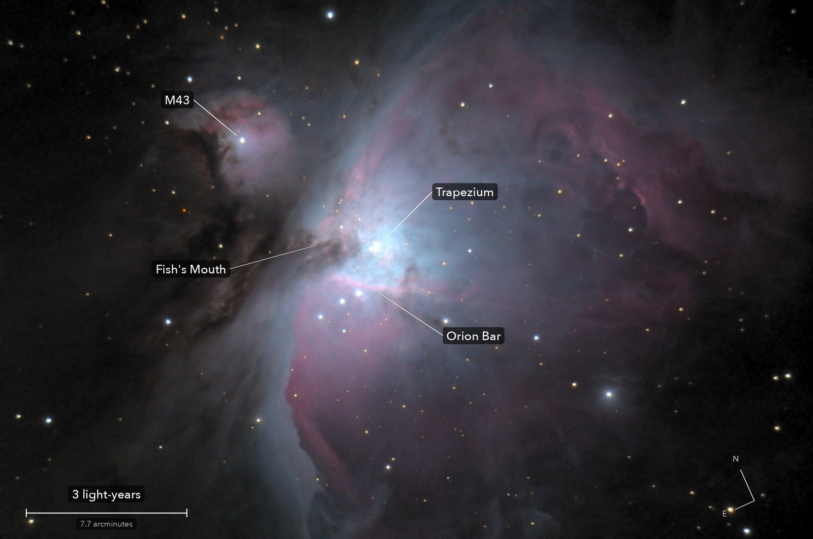

The Orion Nebula
Messier 42
A cloud of glowing gas where stars are being born right now. The four young stars at its heart, the Trapezium, light up the whole nebula.
What you are looking at

Swipe sideways to see the rest. Tap the picture for full size.
- Distance
- 1,344 light-years
- This picture spans
- 15 light-years
- The light left
- Around the year 680
- For scale
- Neptune's whole orbit would cover a fifth of one pixel
Technical detailsHow this picture was made: the equipment, the exposures and the processing.
© 2026 Brad Gessler · Celestron 8SE (8 inch, 2,080 mm) and Sony a6000 on an EQ6-R · San Francisco Bay Area · 4 October 2026
© 2026 Brad Gessler. The pictures and the words are his own; all rights reserved.